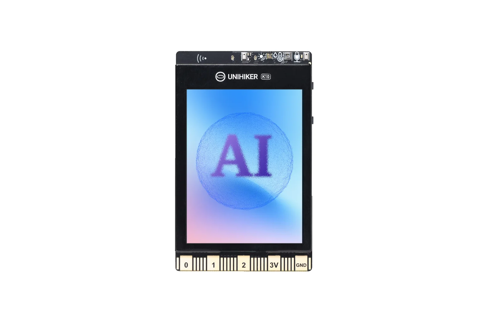

UNIHIKER K10
DFRobot · DFRobot UNIHIKER K10 – ESP32-S3 2.8" AI coding board with camera, mic, speaker
UNIHIKER K10 is a 2.8" ESP32 display board by DFRobot based on the ESP32-S3.
Features, ports & interfaces
- Wi-Fi 4 (802.11 b/g/n, 2.4 GHz) – version from the ESP32-S3 datasheet
- Speaker
- Microphone
- Camera: 2 MP camera
- RGB lights
Specifications
| Parameter | Value | Source |
|---|---|---|
| Screen size | 2.8" | source |
| MCU / SoC | ESP32-S3 | source |
| MCU family | ESP32-S3 | source |
| Wi-Fi | Wi-Fi | source |
| SKU | DFR0992 | source |
| Category | DFRobot | |
| Camera | 2 MP camera | source |
| Microphone | Microphone | source |
| RGB LED | RGB lights | source |
| Other sensors | Onboard sensors | source |
| Speaker interface | Speaker | source |
| Vendor | DFRobot |
Official links & documentation
Notes
- Only the facts stated in the product introduction are listed; resolution / memory are not taken from third-party sources.